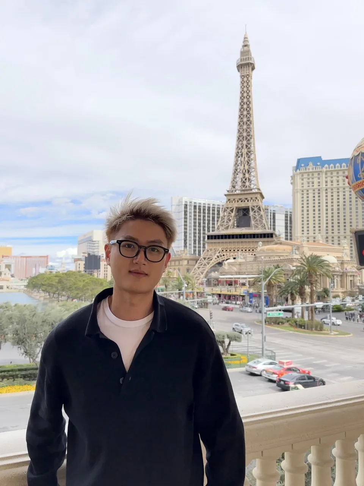
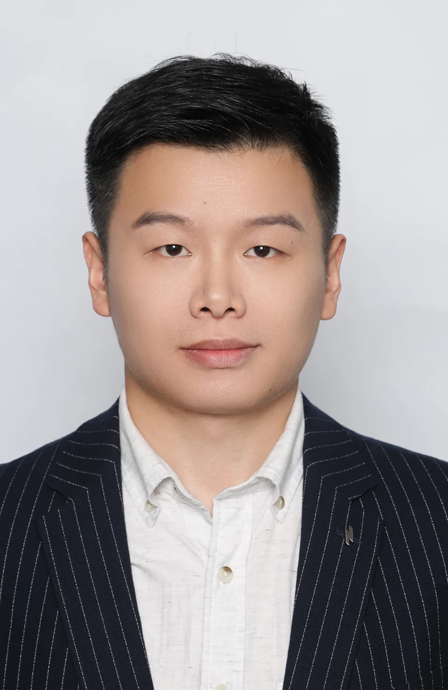
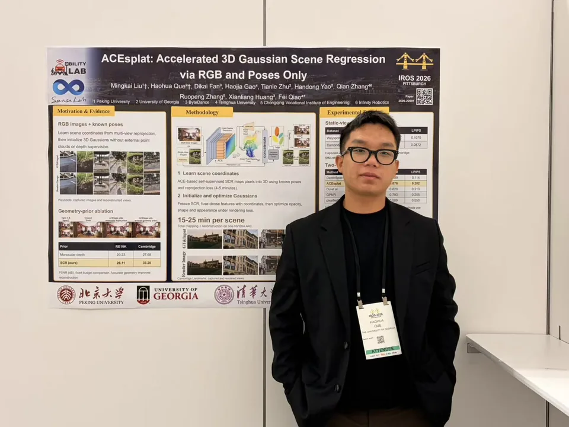

Tianle Zhu
Ph.D. Student · ECAM
Cooperative perception, artificial intelligence, and safety.
Our people
Meet the researchers connecting autonomous systems, infrastructure, and transportation at the University of Georgia.

Principal investigator
Assistant Professor
School of Environmental, Civil, Agricultural and Mechanical Engineering (ECAM)
University of Georgia
Faculty Fellow, Institute of Artificial Intelligence
Connected and automated vehicles · Cyber-physical systems · Smart transportation and infrastructure · AI · Safety
Research assistants

Ph.D. Student · ECAM
Cooperative perception, artificial intelligence, and safety.

Ph.D. Student · Mechanical Engineering
End-to-end autonomous driving, robotics, and computer vision.

Ph.D. Student · ECAM
Connected and automated vehicle modeling and simulation, AI, and cyber-physical systems.
Master's Student · IAI
Connected and automated vehicle network optimization and simulation, and AI.
Our community
Undergraduate Student (CS)
Summer 2026Undergraduate Student (ECAM)
Fall 2025Young Dawgs Intern · North Oconee High School
Spring 2025